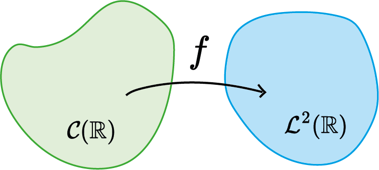

Aula 17:
Introdução à análise de sistemas, modelagem e Reposta ao Impulso
SEL0383
29 de outubro de 2024
Sinal é tudo que carrega informação.

O que é um sistema?
Sistema é tudo que modifica um sinal.

Telecomunicações
Internet

Indústria: variáveis de processo

Corpo Humano


Corpo Humano


Mercado Financeiro

Função matemática $g:\mathbb{R}\to\mathbb{C}$
Os mesmos conceitos são validos para dimensões maiores
($\mathbb{R}^2,\mathbb{R}^3$,...$\mathbb{R}^n$)
Função matemática?

Sistema
Operador que transforme um sinal em outro sinal!
Equações Diferenciais Ordinárias (EDO)
EDO
Sistema
$$ y(t)=G\{x(t)\} $$
- Linearidade
- Invariância temporal;
- Memória;
- Causalidade;
- Estabilidade;
Se $$ y_1(t)=G\{x_1(t)\},\quad y_2(t)=G\{x_2(t)\} $$ então, $$ G\{\alpha x_1(t)+\beta x_2(t)\}=\alpha y_1(t) + \beta y_2(t) $$
Se $$ y(t)=G\{x(t)\}, $$ então, $$ G\{x(t-t_0)\}=y(t-t_0) $$
$$ y(t)=G\{x(t)\}, $$
$$ y(t_0)=G\{x(t)\}, t\le t_0 $$
BIBO-Estabilidade (Bounded-Input-Bounded-Output):
Se
$$
|x(t)|\le \alpha
$$
então
$$
|y(t)|\le \beta
$$
BIBO-Estabilidade (Bounded-Input-Bounded-Output):

Estabilidade Assintótica:
$$
\exists \alpha < \infty : \lim_{t\to\infty} |y(t)-\alpha|\to 0
$$
Estabilidade Assintótica:
- Tempo contínuo ou tempo discreto;
- Linear ou Não-linear
- Escalar ou Multivariável;
- Determinísticos ou Estocástico;
- Caótico ou Não-Caótico;


$ l\ddot{\theta}=-g\sin(\theta)-b\dot{\theta}+u $

$ \ddot{y}+\alpha \dot{y}+\beta y = F $
- Satisfaz propriedade da superposição $\to $ linear
- Não-satisfaz propriedade da superposição $\to$ não-linear
SISO (Single-Input-Single-Output):
Sistema Escalar (Unidimensional)
$$ x(t)\in\mathbb{R},\quad y(t) \in \mathbb{R} $$

Sistema Multivariável (Multidimensional) $$ u(t)\in\mathbb{R^m},\quad y(t) \in \mathbb{R^p} $$


Aprender propriedades que os sinais obedecem quando passam por uma classe especial de sistemas:
Sistemas Lineares e Invariantes no Tempo (SLIT), causais, determinístico e não-caóticos.
EDO Lineares: $$ \frac{d^n y}{dt^n}+\cdots+a_{n-1}\frac{dy}{dt}+a_ny=\frac{d^m x}{dt^m}+\cdots+b_{m-1}\frac{dx}{dt}+b_mx $$
Mudança de base de Representação: $$ \mathcal{F}\Bigl\{\sum_{i=1}^na_i\frac{d^i y}{dt^i}\Bigr\}=\mathcal{F}\Bigl\{\sum_{j=1}^mb_j\frac{d^j x}{dt^j}\Bigr\} $$
Equação Algébrica no plano complexo: $$ Y(\omega)=\underbrace{\frac{(j\omega)^m+\cdots+b_{m-1}j\omega+ b_m}{(j\omega)^n+\cdots+a_{n-1}j\omega+a_n}}_{G(\omega)}X(\omega), (C.I.N.) $$
Equação Algébrica no plano complexo: $$ Y(\omega)=G(\omega)X(\omega),\quad (C.I.N.) $$
Sinal de Saída: $$ y(t)=g(t)\ast x(t),\quad (C.I.N.) $$
$$ y(t)=tx(t) $$
- É um sistema linear?
- Tem memória?
- É causal?
- É invariante no tempo?
- É BIBO-estável?
$$ y(t)=e^{x(t)} $$
- É um sistema linear?
- Tem memória?
- É causal?
- É invariante no tempo?
- É BIBO-estável?
$$ y(t)=\int_{-\infty}^t x(\tau)d\tau $$
- É um sistema linear?
- Tem memória?
- É causal?
- É invariante no tempo?
- É BIBO-estável?
Os modelos matemáticos (EDO) que relacionam sinal de entrada com sinal de saída de SLIT são obtidos através das leis e conceitos que regem o comportamento dos elementos que formam o sistema!
- Sistemas elétricos: Leis da eletricidade;
- Sistemas mecânicos: Leis da mecânica;
- Sistemas biológicos: Conceitos da Biologia;
- Sistemas econômicos: Conceitos de Economia;
- etc...
- Lei de Ohm;
- Leis de Kirchhoff;
- Equações de Maxwell;
- etc...
- Leis de Newton
- Conservação de energia;
- etc...
$$ y(t)=\Bigl(\begin{matrix}\text{efeito}\\\text{condição inicial}\end{matrix}\Bigr)+\Bigl(\begin{matrix}\text{efeito}\\\text{sinal de entrada}\end{matrix}\Bigr) $$
Efeito da Condição Inicial: $$ \frac{d^n y}{dt^n}+\cdots+a_{n-1}\frac{dy}{dt}+a_ny=0 $$$$ y(t)=\Bigl(\begin{matrix}\text{efeito}\\\text{condição inicial}\end{matrix}\Bigr)+\Bigl(\begin{matrix}\text{efeito}\\\text{sinal de entrada}\end{matrix}\Bigr) $$
Efeito do Sinal de Entrada: $$ y_p(t)=g(t)\ast x(t) $$$$ y(t)=y_h(t)+g(t)\ast x(t) $$
Na prática, considera-se que o sistema está em estado de repouso (condições iniciais nulas). Portanto,$$ y(t)=g(t)\ast x(t) $$
$$ g(t)=\mathcal{F}^{-1}\{G(\omega)\} $$

Par Transformada de Fourier do Impulso $$ \delta(t) \Longleftrightarrow 1 $$
$$ g(t)=G\{\delta(t)\} $$
A resposta ao impulso é suficiente para caracterizar completamente um SLIT!
$$ x(t)=x(t)\ast \delta(t) = \int_{-\infty}^\infty x(\tau)\delta(t-\tau)d\tau $$

$$ x(t)=x(t)\ast \delta(t) = \int_{-\infty}^\infty x(\tau)\delta(t-\tau)d\tau $$
Portanto, para SLIT, $$ y(t)=G\{x(t)\}=G\Bigl\{\int_{-\infty}^\infty x(\tau)\delta(t-\tau)d\tau \Bigr\} $$
$$ x(t)=x(t)\ast \delta(t) = \int_{-\infty}^\infty x(\tau)\delta(t-\tau)d\tau $$
Portanto, para SLIT, $$ y(t)=G\{x(t)\}=\int_{-\infty}^\infty x(\tau)G\{\delta(t-\tau)\}d\tau $$
$$ x(t)=x(t)\ast \delta(t) = \int_{-\infty}^\infty x(\tau)\delta(t-\tau)d\tau $$
Portanto, para SLIT, $$ y(t)=G\{x(t)\}=\int_{-\infty}^\infty x(\tau)g(t-\tau)d\tau $$
$$ x(t)=x(t)\ast \delta(t) = \int_{-\infty}^\infty x(\tau)\delta(t-\tau)d\tau $$
Portanto, para SLIT, $$ y(t)=G\{x(t)\}=g(t)\ast x(t) $$


Um SLIT é causal se $$ g(t)=0, \quad t< 0. $$

$$ y(t)=g(t)\ast x(t) $$

$$ y(t)=g(t)\ast x(t) $$

$$ y(t)=g(t)\ast x(t) $$

Um SLIT é BIBO-Estável se, e somente se, a resposta ao impulso for absolutamente integrável $$ \int_{-\infty}^\infty |h(\tau)|d\tau < \infty $$
Considere $$ y(t)=\int_{-\infty}^{t+2} x(\tau)d\tau $$
- O sistema é BIBO-Estável?